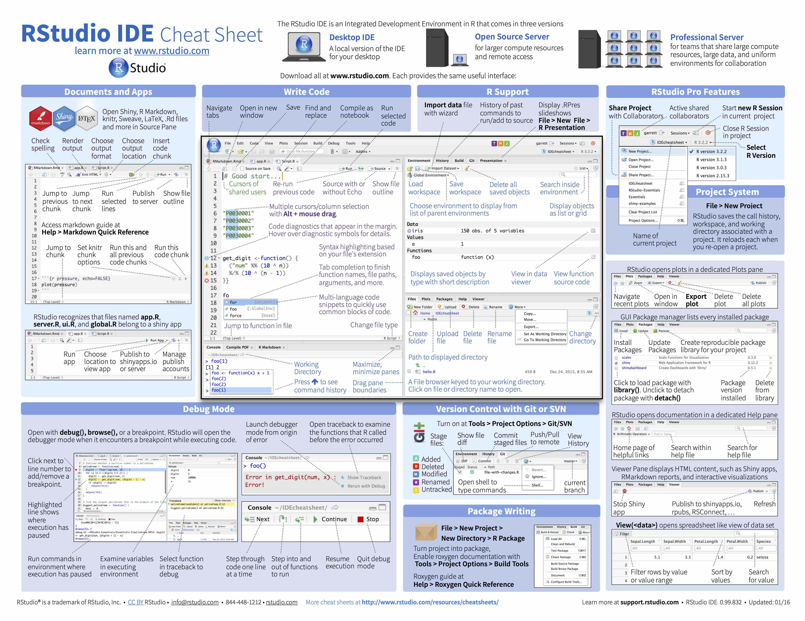

Instructions for how to install R and RStudio
Before we can get started we need to install two different software programs, R and RStudio.
Start by installing R:
- Go to cran.r-project.org
- Windows users click Download R for Windows and on the next page install R for the first time and finally Download R 3.6.2 for Windows.
- Mac users click Download R for (Mac) OS X and on the next page pick the version matching the OS version you are using (for most users R-3.6.2.pkg will be the right choice).
Next we will install RStudio:
- Go to the rstudio.com download page
- Scroll down until you see a blue rectangle with the text DOWNLOAD RSTUDIO FOR X, where x is the OS of the machine you are using. Click to download.
- Alternatively, scroll down a bit more and find the right version of RStudio for your OS under the header All Installers.
It is possible to use a tablet for the things we are going to cover in the Coding Club (but this will not be a better experience than using a laptop). I have used an iPad successfully and although it is not possible to install R or RStudio on this type of tablet, there are ways of running RStudio online and accessing the software from a web browser. The best way to do so would be to create a free RStudio Cloud account. Make sure your iPad is running iPadOS (iOS13 for iPad) and connect to RStudio Cloud using Safari. Using an external keyboard will be very helpful if not necessary.
Agenda
Here are some topics we will cover the first Coding Club session:
- Troubleshooting installation (if necessary).
- We will talk about some reasons to choose R programming for data science.
- Dr. Walum will showcase some of his work to give an idea of what R + RStudio can be used for.
- We will write some very simple code (using the software as a calculator) to see how RStudio behaves.
- We will cover some tips for navigating the RStudio IDE (Integrated Development Environment). See image below and click to access the online pdf version of a RStudio IDE cheat sheet:
